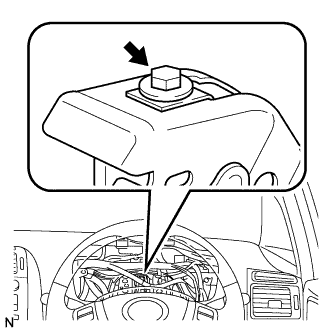
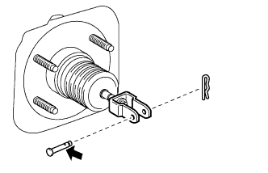
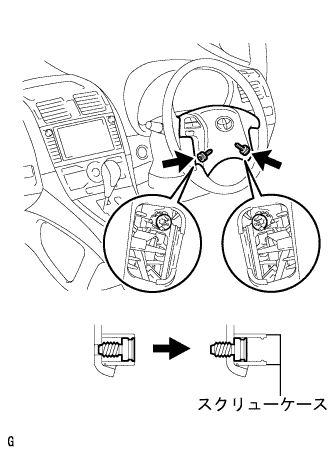

Brake Pedal Support Assembly Installation |
| 1. Install Brake Pedal Support Sub-assembly |
 |
Install the brake pedal support with the 4 nuts.
 |
Install the brake pedal support to the instrument panel reinforcement with the bolt.
 |
Engage the 2 clamps and connect the stop light switch connector.
| 2. Connect Brake Master Cylinder Push Rod Clevis |
 |
Apply MP grease No.2 to the brake master cylinder push rod clevis.
Connect the brake master cylinder push rod clevis to the brake pedal with the push rod clevis pin.
Install a new clip to the push rod clevis pin.
| 3. Install Brake Pedal Return Spring |
 |
Install the brake pedal return spring to the brake pedal support.
| 4. Install Combination Meter Assembly |
 |
Connect the connectors and temporarily install the combination meter assembly.
 |
Install the combination meter assembly with the 4 screws.
| 5. Install Instrument Cluster Finish Panel Assembly |
 |
Engage the 2 claws and 9 clips, and install the instrument cluster finish panel.
 |
Remove the protective tape that was applied.
| 6. Inspect and Adjust Brake Pedal Height |
 |
Inspect brake pedal height
Turn back the carpet.
Turn back the dash silencer from the slit in the dash silencer.
Measure the shortest distance from the brake pedal pad surface to the floor panel.
Adjust brake pedal height
Disconnect the connector from the stop light switch.
Loosen the clevis lock nut and turn the push rod to adjust the pedal height.
Tighten the clevis lock nut.
 |
Insert the stop light switch into the adjuster until the stop light switch contacts the brake.
 |
Turn the stop light switch approximately 1/4 turn clockwise.
Connect the connector to the stop light switch.
Check the shaft protrusion.
Check that the stop lights do not illuminate when the brake pedal is not depressed.
| 7. Inspect Brake Pedal Free Play |
Stop the engine and depress the brake pedal several times until there is no more vacuum left in the brake booster.
Inspect the brake pedal free play.
If the free play is 1mm or less, check the shaft protrusion of the stop light switch assembly.
| 8. Inspect Brake Pedal Reserve Distance |
Inspect the brake pedal reserve distance.
| 9. Install Instrument Panel Airbag Assembly LWR NO.1 |
 |
Connect the connector to the instrument lower airbag No.1.
 |
Install the instrument lower airbag No.1 with the 6 claws and 2 guides.
 |
Install the instrument lower airbag No.1 with the 4 bolts.
| 10. Install Instrument Panel Under Cover Sub-assembly NO.1 |
| 11. Install Steering Wheel Assembly |
 |
Align the matchmarks and install the steering wheel assembly to the steering column assembly.
Install the nut.
Connect each connector to the spiral cable.
| 12. Install Horn Button Assembly |
 |
Connect the horn connector to the horn button assembly.
Connect the airbag connector to the horn button assembly and lock it securely.
 |
Using a torx socket wrench (T30), install the horn button assembly to the steering wheel assembly with the 2 torx bolts.
| 13. Install Steering Wheel Cover Lower NO.3 |
 |
Engage the claws and install the steering wheel cover lower No.3.
| 14. Install Steering Wheel Cover Lower NO.2 |
 |
Engage the claws and install the steering wheel cover lower No.2.
| 15. Install Steering Column Cover |
 |
Engage the 2 claws and pins, and install the steering column cover (upper side).
 |
Engage the 2 claws and install the steering column cover (lower side).
 |
Engage the 4 claws.
 |
Engage the claws.
| 16. Connect Battery Negative Terminal |
Reference| 17. Inspect Airbag Warning Light |
Reference| 18. Setting Procedure When Disconnecting/Reconnecting Battery Terminal |
Reference